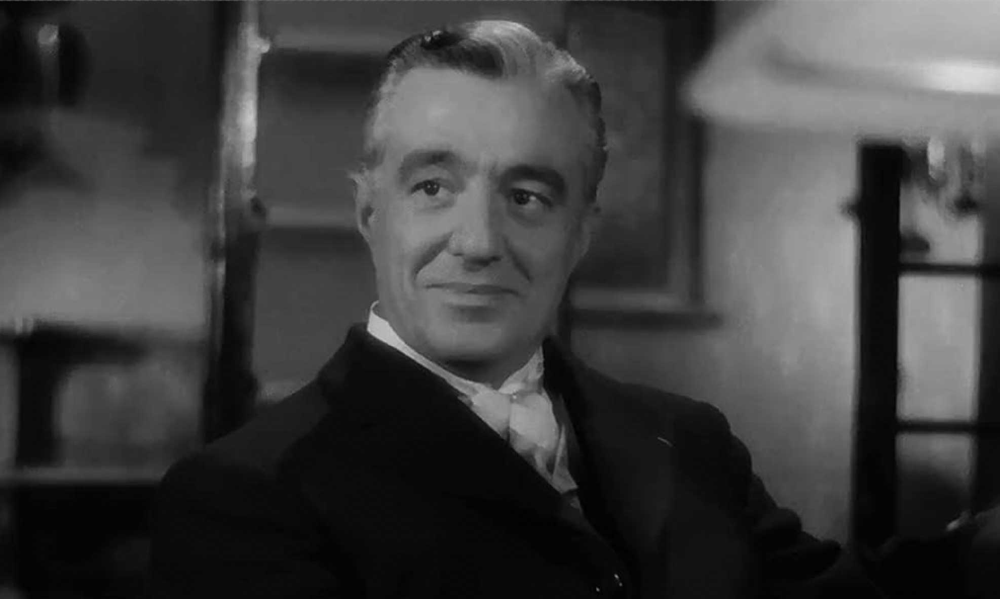

Bicycle Thieves is one of my favorite films. I love the Italian neorealisim films of the mid twentieth century and this is one of the very best.
I was struck by the bleak landscape and the daily struggle that the post-war Romans endured in the streets and barely livable housing projects. To see Italy today, one would have a hard time imagining the desperate hand-to-mouth existence they have been able to overcome. Unlike Hollywood films from the era, this film captures events that could be and truly seem real. There is no happy ending, either.
The Director
The Director, Vittorio de Sica
Vittorio De Sica was an Italian film director and actor, a leading figure in the neorealist movement. Four of the films he directed won Academy Awards: Sciuscià and Bicycle Thieves, while Yesterday, Today and Tomorrow and Il giardino dei Finzi Contini won the Academy Award for Best Foreign Language Film.
Another favorite film of mine, Il Generale Della Rovere, features actor De Sica in the leading role. IHe plays the conman Grimaldi. While pretending to be a colonelfor less than honorable purposes, the Gestapo forces him to impersonate a real General, Della Rovere, to find important resistance fighters amongst Italian prisoners.
My favorite character is Bruno, the son of the bicycle thief. He is so expressive and more mature than his father, who in today's view would be considered negligent and abusive. When his father is arrested for trying to replace his own stolen bicycle by becoming a thief himself, Bruno's tears save him. It is sad and hard to watch the humiliation the father feels. The bicycle symbolizes salvation and it was quickly and cruelly snatched away.
As an ardent Italianophile, I love the creativity and beauty found in so many forms of art and design that Italy is famous for. Graphic design, fashion, awesome cars, and inspirational movies; Italian art/design is always cutting edge. This movie is definitely one such Italian item of perfection and cinematic beauty.
If you have a San Diego library card, you can find movies like "Bicycle Thieves" and other great classic films by setting up an account for and logging in to Kanopy. Kanopy is usually a paid service, but you can access a limited number of film each month for free if using your library card.
Free streaming of modern and classic cinema, what a great benefit! I believe "Bicycles Thieves" is part of the Criterion Collection" which is a wonderful selection of noteworthy films offered via Kanopy.